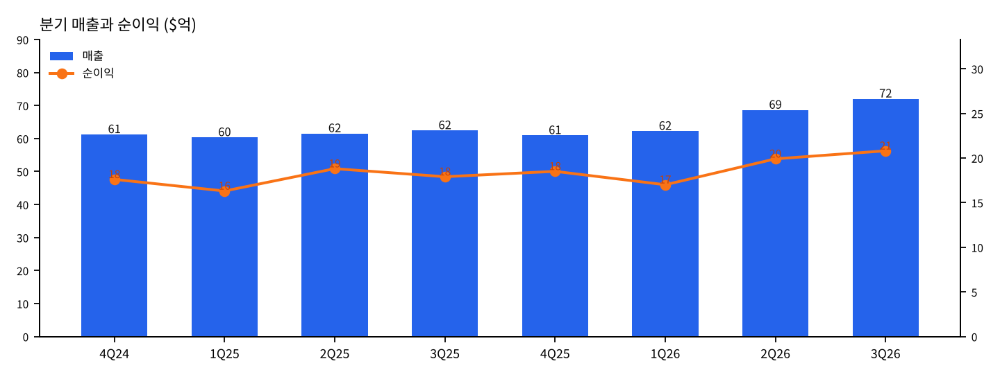
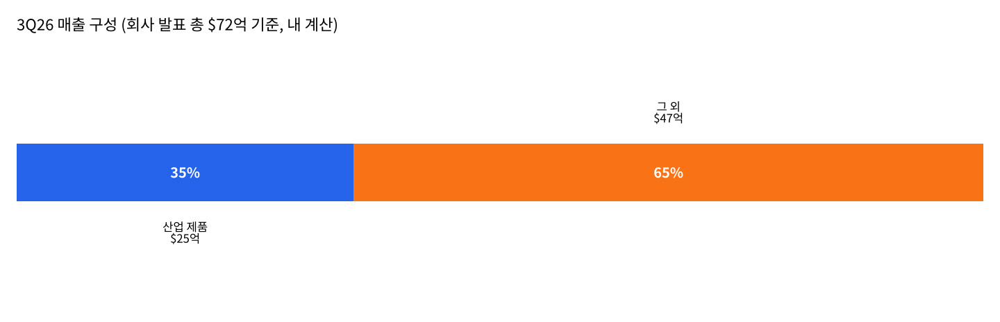
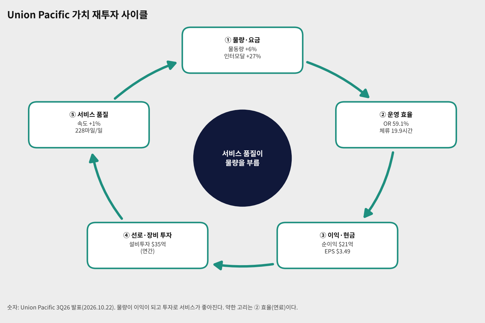

Union Pacific은 석탄·곡물·화학·컨테이너를 철도로 나르고 요금과 연료 할증료를 받는다. 비용을 매출로 나눈 영업비율이 낮을수록 효율이 좋다.
| 항목 | 내용 |
|---|---|
| 종목 | Union Pacific (UNP) · NYSE · 산업재(철도) · 네브래스카 오마하 |
| 최근 분기(3Q26) | 매출 $72억, EPS $3.49 |
| 핵심 지표 | 영업비율 59.1%, 물동량 +6% |
| 직원 수 | 약 29,287명(트레이딩뷰) |
| 멀티플 | PER·PEG·P/S는 08~10 항목 표 참조 |
| 직책 | 인물 | 역할·특징 |
|---|---|---|
| CEO | 짐 베나(Jim Vena) | "안전하게 약속한 서비스를 제공하며 6% 물량 성장을 처리했다"고 설명 |
| CFO | 제니퍼 해먼(Jennifer Hamann) | 2027년 초 퇴임 예정(출처: 발표 보도) |
경영 스타일: 운영 효율. 생산성 지표를 9분기 연속 기록 경신하는 쪽으로 비용을 낮춘다.
열차 속도·터미널 체류시간을 줄여 같은 인력으로 더 많은 물량을 처리한다. 평균 터미널 체류 19.9시간.
Norfolk Southern과 합쳐 동서를 잇는 단일 네트워크를 만든다는 계획이다.
다음 실적발표는 세 가지 질문에 답하는 자리다.
1. 연료 부담에도 영업비율이 개선되나?
2. 물동량 성장이 이어지나?
3. STB 심사가 진행되나?
한 줄 판정 규칙: 첫 질문(영업비율)이 4Q에 연료 부담을 상쇄하면 약한 고리(③ 연료)가 풀린다.
일정: 4Q26 실적 발표는 트레이딩뷰 기준 2027.01.28(확인 필요). CFO 퇴임은 2027년 초다.
| 분기 | 매출 | 순이익 | EPS | 조정 EPS | 특이 사항 |
|---|---|---|---|---|---|
| 4Q24 | $61.2억 | $17.6억 | 2.91 | 2.91 | |
| 1Q25 | $60.3억 | $16.3억 | 2.70 | 2.70 | |
| 2Q25 | $61.5억 | $18.8억 | 3.15 | 3.03 | |
| 3Q25 | $62.4억 | $17.9억 | 3.01 | 3.08 | |
| 4Q25 | $60.9억 | $18.5억 | 3.11 | 2.86 | |
| 1Q26 | $62.2억 | $17.0억 | 2.87 | 2.93 | |
| 2Q26 | $68.6억 | $19.9억 | 3.36 | 3.41 | |
| 3Q26 | $72.0억 | $20.8억 | 3.49 | 3.53 | 물동량 +6%, OR 59.1% |
매출은 트레이딩뷰 스캐너의 분기 총매출이라 회사가 발표한 순매출과 다를 수 있다. 매출·순이익·EPS(GAAP 희석)는 트레이딩뷰 스캐너, 조정 EPS는 트레이딩뷰 실적 페이지의 Reported 값이다. 분기 정렬은 오래된 분기→최신이다.

흐름 요약: 최근 분기 매출은 $72.0억로 전년 동기 $62.4억 대비 +15.4%, 순이익은 $20.8억(전년 $17.9억)다. 최근 4분기 GAAP EPS는 $12.83, 조정 EPS는 $12.73다.
| 항목 | 내용 | 3Q26 금액 | 비고 |
|---|---|---|---|
| 산업 제품 | Industrial | $25.1억 | +14% |
| 그 외(내 계산) | 벌크·프리미엄·연료할증 등 | $46.9억 | 총 $72억에서 위 항목을 뺀 값 |

산업 제품 매출은 $25.1억(+14%)이다. 나머지 부문별 금액은 이 보고서에 없어 합계에서 뺀 값으로 표시했다.
Union Pacific은 안전하고 믿을 수 있는 화물 운송으로 고객을 연결하고 철도 산업의 효율 기준이 되는 것을 목표로 한다.
| 축 | 내용 |
|---|---|
| 효율 | OR 59.1% |
| 네트워크 | Norfolk Southern 합병 추진 |
| 투자 | 설비투자 $35억 |

| 이동평균 | 값 | 종가 대비 | 위치 |
|---|---|---|---|
| 5일선 | $301.66 | -0.3% | 종가 아래 |
| 20일선 | $300.33 | +0.2% | 종가 위 |
| 50일선 | $288.05 | +4.5% | 종가 위 |
| 100일선 | $291.14 | +3.4% | 종가 위 |
| 200일선 | $274.92 | +9.5% | 종가 위 |
52주 고가 $315.99(2026-07-23)·저가 $219.89(2025-11-18) 범위에서 종가 $300.90는 20일선, 50일선, 100일선, 200일선을 웃돌고 5일선은 밑돈다.
| 규칙 | 기준 | 현재 값 | 신호 |
|---|---|---|---|
| 장기 추세 필터 | 종가 vs 200일선 | $300.90 > $274.92 | 매수 |
| 중장기 교차 | 50일선 vs 200일선 | $288.05 > $274.92 | 매수 |
| 단기 교차 | 20일선 vs 50일선 | $300.33 > $288.05 | 매수 |
| 돈키언 채널 | 55일 고가 $309.86 / 저가 $268.26 | 중간값 $289.06 위 | 매수 |
| 1개월 모멘텀 | 21거래일 수익률 | +4.6% (기준 $287.61) | 매수 |
| 3개월 모멘텀 | 63거래일 수익률 | -1.0% (기준 $303.97) | 매도 |
| 6개월 모멘텀 | 126거래일 수익률 | +13.2% (기준 $265.80) | 매수 |
| 12개월 모멘텀 | 252거래일 수익률 | +36.2% (기준 $221.00) | 매수 |
| 종합 (8개 평균) | +0.75 | 강한 매수 |
해석: 매수 신호 7개(장기 추세 필터, 중장기 교차, 단기 교차, 돈키언 채널, 1개월 모멘텀, 6개월 모멘텀, 12개월 모멘텀), 매도 신호 1개(3개월 모멘텀). CTA 점수 +0.75(강한 매수). 14일 ATR $6.71 (2.2%), 52주 고가 $315.99 · 저가 $219.89.
| 가격 | 기준 | 무엇이 바뀌나 |
|---|---|---|
| $309.86 | 55일 고가 | 돌파 시 채널 상단 갱신 |
| $303.97 | 3개월 모멘텀 기준가 | 종가가 이 가격 위면 3개월 신호 매수 |
| $289.06 | 돈키언 중간값 | 55일 채널 중간값 위/아래로 신호가 바뀜 |
| $287.61 | 1개월 모멘텀 기준가 | 종가가 이 가격 위면 1개월 신호 매수 |
| $274.92 | 200일선 | 종가가 이 선 위/아래인지로 장기 추세 신호가 바뀜 |
| $268.26 | 55일 저가 | 이탈 시 채널 하단 갱신 |
| $265.80 | 6개월 모멘텀 기준가 | 종가가 이 가격 위면 6개월 신호 매수 |
| $221.00 | 12개월 모멘텀 기준가 | 종가가 이 가격 위면 12개월 신호 매수 |
가격 수준은 신호가 바뀌는 기준선일 뿐 진입·청산 가격 제안이 아니다. 20일/50일 교차는 이동평균 자체가 움직여 단일 가격으로 표시하지 않았다. 일봉·주봉은 종가 기준 직접 계산(고저 데이터 미사용)이다.
| 악재 요인 | 내용 | 강도 |
|---|---|---|
| 연료 가격 | 디젤 $4.21/갤런(+64%), 4Q $4.85 가정 | 높음 |
| 합병 심사 | STB 심사 결과와 일정 불확실, 자사주 매입 중단 | 중간 |
| CFO 교체 | CFO 2027년 초 퇴임 | 참고 |
| 티커 | 회사 | PER(TTM) | PEG | P/S | EPS 성장(YoY) |
|---|---|---|---|---|---|
| UNP | Union Pacific | 23.5배 | 2.60 | 6.78배 | +9% |
| CSX | CSX | 26.6배 | 1.05 | 6.34배 | +25% |
| NSC | Norfolk Southern | 27.1배 | – | 5.56배 | -9% |
| ODFL | Old Dominion | 31.5배 | 2.59 | 6.18배 | +12% |
| CAT | Caterpillar | 21.9배 | 0.73 | 3.38배 | +31% |
비교 결론: Union Pacific의 PER 23.5배는 CSX·Norfolk Southern·Old Dominion보다 낮고 Caterpillar보다 높다. PEG 2.60는 CSX(1.05)·Caterpillar(0.73)보다 높고 Old Dominion(2.59)과 비슷하다.
현금·부채는 트레이딩뷰 스캐너 값이다. 합병은 $200억 현금과 주식 교환을 포함한다.
| 지표 | 값 | 출처 | 해석 |
|---|---|---|---|
| 현금·단기투자 | $31억 | 트레이딩뷰 스캐너(최근 분기) | |
| 총부채 | $311억 | 트레이딩뷰 스캐너(최근 분기) | |
| 순부채(부채−현금) | $280억 | 내 계산 | 현금 대비 부채 부담 |
| 잉여현금흐름(TTM) | $67억 | 트레이딩뷰 스캐너 | |
| TTM 매출 | $264억 | 트레이딩뷰 스캐너 |
| 기준 | 매출 | P/S | 비고 |
|---|---|---|---|
| 내 계산(종가 ÷ 최근 4분기 매출 합계) | $263.7억 | 6.78배 | 시총은 정렬용 데이터에서만 사용 |
| 동종(트레이딩뷰) | – | CSX 6.34배 · NSC 5.56배 · ODFL 6.18배 · CAT 3.38배 | 11.19 |
해석: 합병 자금 조달로 부채가 늘 수 있다(내 해석). FCF는 TTM 매출의 약 7%다.
EBITDA는 영업활동의 현금 창출력을 보는 지표이고, PEG는 PER을 EPS 성장률로 나눈 값이다. EBITDA·FCF는 트레이딩뷰 TTM 값이다.
| 지표 | 값 | 산출 |
|---|---|---|
| EBITDA(TTM) | $131억 | 트레이딩뷰 스캐너 |
| EBITDA 마진 | 49.6% | EBITDA ÷ TTM 매출(내 계산) |
| FCF 마진 | 25.4% | FCF ÷ TTM 매출(내 계산) |
| PER(GAAP TTM) | 23.5배 | $300.90 ÷ $12.83 |
| PER(조정 TTM) | 23.6배 | $300.90 ÷ $12.73 |
| 방식 | PER | EPS 성장률 | PEG | 판정 |
|---|---|---|---|---|
| GAAP EPS (TTM $12.83) | 23.5배 | +9% ($11.77 → $12.83) | 2.60 | 기준 초과 |
| 조정 EPS (TTM $12.73) | 23.6배 | +9% ($11.72 → $12.73) | 2.74 | 기준 초과 |
판정: GAAP EPS 기준 PEG 2.60 → 1.0 초과 PEG 기준은 1.0 이하 투자 적격, 0.5 이하 적극 매수다. EPS 성장률은 최근 4분기 EPS 합계를 직전 4분기 합계와 비교한 값(내 계산)이고, 일회성 항목이 있으면 조정 EPS 행을 함께 본다.

Union Pacific의 사이클: 물량이 이익이 되고 그 돈이 선로·장비에 재투자돼 서비스가 좋아지고 다시 물량을 받는다.
| 고리 | 현재 숫자·근거 |
|---|---|
| ① 물량·요금 | 물동량 +6% · 인터모달 +27% · 매출 +15% |
| ② 운영 효율 | OR 59.1% · 평균 터미널 체류 19.9시간 |
| ③ 이익·현금 | 순이익 $21억(+16%) · EPS $3.49 |
| ④ 선로·장비 투자 | FY26 설비투자 $35억 유지 |
| ⑤ 서비스 품질 | 화물차 속도 228마일/일(+1%) |
사이클의 특징: 약한 고리는 ② 운영 효율이다(연료가 OR을 140bp 눌렀다). "(내 해석)"은 보고서 수치가 아닌 해석이다.